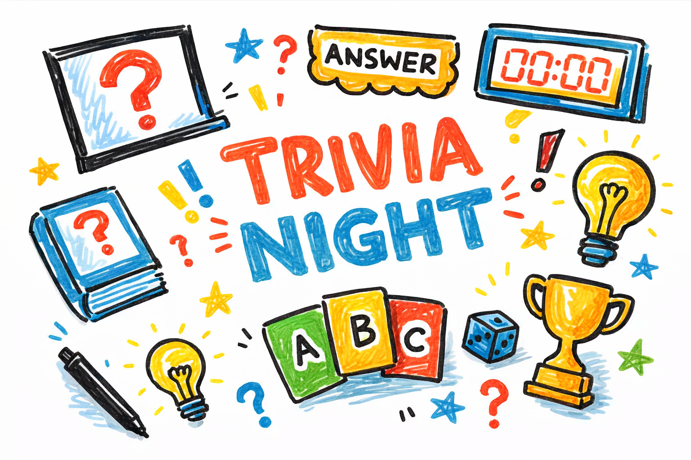
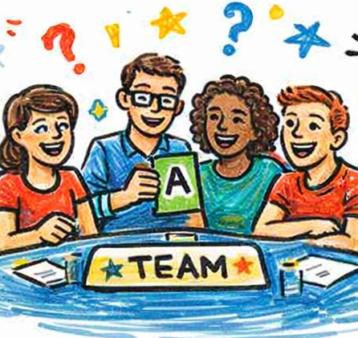
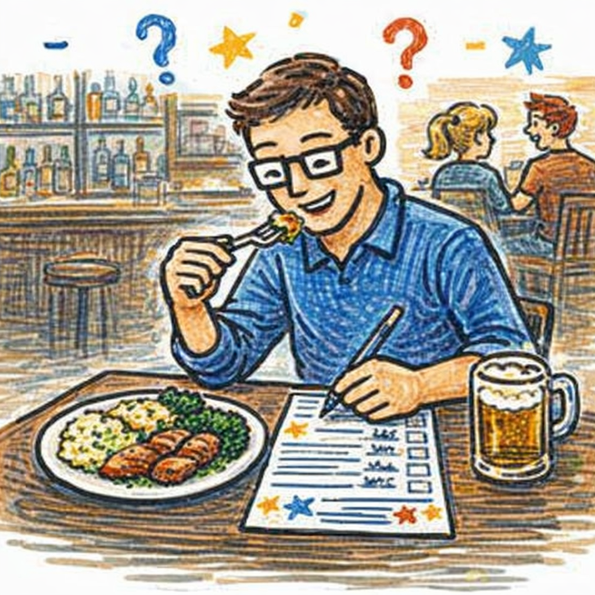
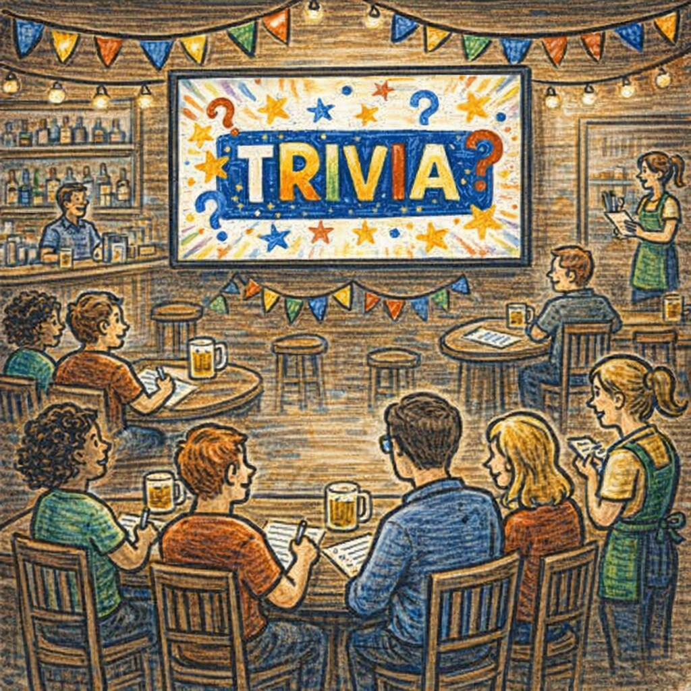
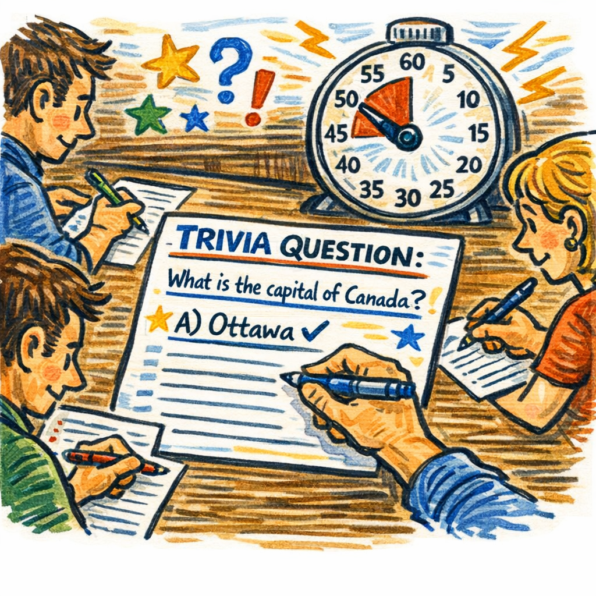
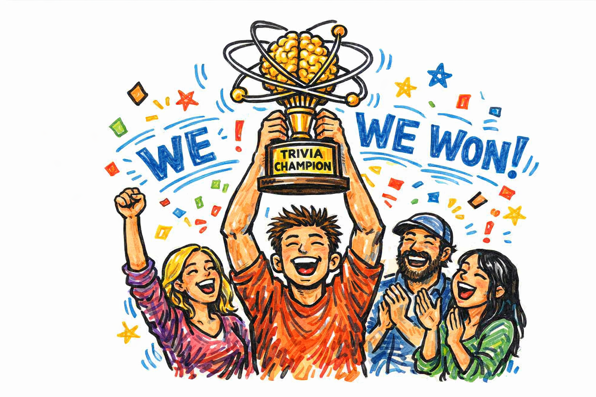

Home
Welcome to the home of my favorite hobby, Trivia!
What is trivia?
Trivia is a game or competition in which players answer questions about various topics, often in a pub or social setting. It can be played individually or in teams, and questions can cover a wide range of subjects, including history, science, pop culture, sports, and more. The goal is to test knowledge and have fun while doing it!

About Me
Who am I?
My name is Quinn Conroy, and I am a student at the University of North Carolina at Charlotte, and I have been playing trivia nightly for the past 3 months. Trivia was always something I loved doing, whether that be kahoots in class or friendly trivia nights, but I only really got into it in 2024.

Best Times
When do I play?
I play trivia every thursday at 7 PM. I have found that this is the best time for me to play, as it allows me to unwind after a long day of classes, and play a fun game while eating my dinner.
| Day | Monday | Tuesday | Wednesday | Thursday | Friday | Saturday | Sunday |
|---|---|---|---|---|---|---|---|
| Time | None | None | None | 7 PM | None | None | None |

Best Locations
Where do I play?
The reason why I play at 7:00 PM on thursdays? Because that is when my favorite place to play trivia hosts it! You may have guessed it from the mention of eating dinner while playing, but I play at a restaurant called "Real McCoy's" in my hometown of Wake Forest, NC.
That's my favorite place to play, but really any bar or restaurant that hosts trivia for customers is a great place to play. All that matters is that they have good food and a good atmosphere!

How I Do It
How do I play?
Playing trivia is pretty simple, you just show up to the venue, find a seat, and wait for the host to start asking questions. The host will usually read out a question(sometimes a full round of questions), will say if it is open ended or multiple choice, and you'll have to write your answer on a card and turn it in before the time runs out. You get points for getting it right, and depeding on the venue, you can possibly lose points for getting a question wrong.
Here! You can even try yourself:

Why I Do It
Why do I play?
There are many reasons I enjoy playing trivia so much:
- It is a fun way to unwind after a long day of classes
- It allows me to spend time with my friends and meet new people
- It is a great way to learn new things and expand my knowledge on various topics
- It gives me a sense of accomplishment when I get a question right and even some pride when I win
If you have nothing to do, playing trivia is a great way to pass the time, either with our without your friends! You could even make new ones by going to a trivia night at a bar or restaurant, and you might even learn something new while you're at it!

AI Prompts
Here are the AI prompts I used to help make this website(Claude Sonnet 4.6):
- I need to create a webpage with seven different pages built in (`sections`) where only the one I navigate to will appear. I will need to use JavaScript to track the `id` of the page I am on and CSS to hide all the others. The HTML is straightforward enough for me to do; create a JavaScript that will loop through and check the ID we are on and the CSS to hide/show the pages. This prompt was used to further my understanding of JavaScript and CSS and help me complete one of the primary objectives of this webpage.
- How would I get a form to act like a trivia question? Have them fill out a form and then return an answer based on what they put. Simple html, no API's.
All images were generated using Microsoft Copilot.